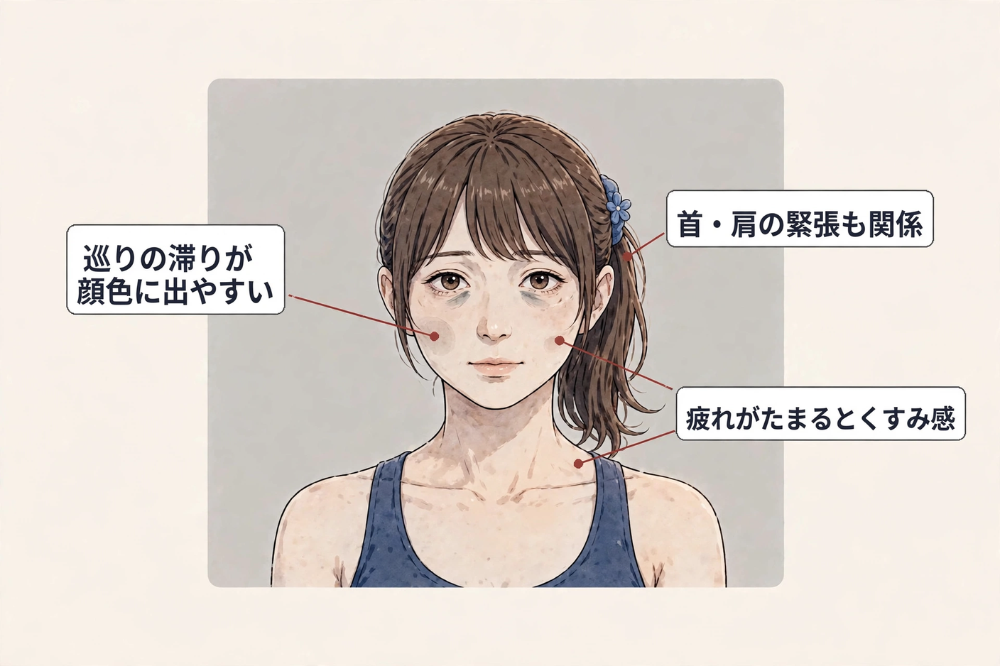

肌のくすみ
美容整体ステラ・ポラリス東三国｜大阪市淀川区東三国・東三国駅徒歩5分・女性向け

血色の巡りを助けて、明るく澄んだ肌印象へ
顔色が沈んで見える、夕方になると肌がくすんで疲れて見える——肌のくすみは、首や肩の巡りの滞りと関わると言われています。顔の血色は巡りの状態を映す鏡のようなもので、首・肩まわりが固まっていると、顔色まで沈んで見えがちです。このページでは、くすみの背景にある巡りの仕組みと、首・肩から整えて明るい肌印象を目指す当サロンでのケア、ご自宅でできるセルフケアをご案内します。くすみは、年齢のせいだけではありません。その日の巡りや、前の晩の眠り、季節の乾燥でも変わるものです。肌の土台である巡りから向き合うことが、透明感への近道です。
ご予約はこちら（Coubic）こんなお悩みありませんか
- 夕方になると、顔色が沈んで見える
- 朝の顔と夕方の顔で、印象が違う気がする
- 目の下に影が出て、疲れて見えやすい
- 首や肩が固まっていて、顔まで重く感じる
- 顔を触ると、冷たく感じることがある
- メイクのノリが悪く、厚塗りに見えてしまう
- 体全体の冷えやむくみも気になっている
当てはまる項目が多いほど、首・肩まわりの巡りの滞りが、顔色の印象に影響している目安とされています。くすみは肌だけの問題ではなく、巡りの問題でもあります。次のセルフチェックで、首まわりの巡りの傾向を確かめてみましょう。
簡単セルフチェック（首まわりの巡りチェック）
耳の下から首すじを触って、張り具合を確かめる簡単な方法です。
- 耳の下に指を当て、首すじに沿って肩までゆっくりなで下ろします。
- 途中で固く張った場所がないか、左右で差がないかを確認します。
- 首すじが固く、顔を触ると冷たく感じる場合は、顔への巡りが滞りやすい目安と言われています。
※これは診断ではありません。ご自身の状態の傾向を知る目安としてお使いください。
肌のくすみの原因と仕組み
顔色と血の巡り
肌の色は、皮膚の下を流れる血の巡りに影響されます。巡りが滞ると、顔色は沈んで見え、くすみとして現れやすくなると言われています。図1のように、血色のある肌と沈んだ肌では、印象は大きく変わります。くすみ対策の土台は、巡りを助けることです。

図1 血色と肌印象の関係、明るく澄んだ肌のイメージ。体の状態には個人差があります。
首・肩まわりが関門になる理由
顔への巡りは、首を通ります。首や肩まわりが固まっていると、その関門で巡りが滞りやすくなります。デスクワークで首・肩がガチガチな方ほど、夕方に顔色が沈むのは、そのためとも言われています。顔のケアの前に、首・肩をゆるめる視点が大切です。巡りがよい状態は、肌に必要なものが届きやすい状態でもあります。顔色の明るさは、体の内側のコンディションを映す鏡と言えます。
冷えとむくみの影響
体が冷えると巡りはさらに滞り、顔のむくみも重なって、くすみが強く見えることがあります。朝の顔のむくみが取れにくい方は、夜の巡りの状態も関わっています。温めて巡らせる習慣が、肌印象の土台になります。顔だけをケアしても、首・肩が固まったままでは巡りの土台は整いません。顔と体をセットで見る視点が大切です。
睡眠と生活リズム
眠りの質や食事、運動の習慣も、巡りと肌の状態に関わると言われています。肌のくすみは生活全体の映し鏡です。サロンケアで巡りを整えることと、日々の習慣の見直しを組み合わせることが、明るい肌印象への近道になります。
セルフケアで足りる場合・サロンケアが向く場合
くすみが軽く、温めたり首・肩をほぐしたりすると顔色が明るく感じる日が多い場合は、まずご自宅でのセルフケアを続けて様子を見る方法があります。一方で、首・肩の固さが強く自分ではゆるめにくい、夕方のくすみが毎日の悩みになっている、顔とあわせて全身の巡りも整えたいという場合は、サロンでのケアが向いている目安になります。サロンでは、首・肩から顔まわりをゆるめて巡りを助け、施術後に「顔色が明るくなった」「目元がすっきりした」と感じやすい状態を目指します。どちらが正解というものではなく、今の状態に合わせて選ぶことが大切です。施術では顔だけでなく、巡りの土台である首・肩・背中まで含めて整える組み立てです。
当サロンでのケア
当サロンのくすみケアは、「首・肩から巡りを整え、明るい肌印象を目指す」組み立てです。まず首・肩の張り具合と姿勢のクセを一緒に確認し、部位と目的に合わせて3つの手技を組み合わせます。
美容整体：首の位置と姿勢の軸を整え、顔への巡りの土台をつくることを目的に。頭が軸の上にのる姿勢を取り戻すお手伝いをします。
アロマオイルマッサージ：首すじから肩、デコルテをオイルで流れるようにゆるめ、巡りが流れやすい状態を目指します。顔まわりの重さにもアプローチします。
もみほぐし：固まった首の付け根や肩の上部をほぐし、顔への巡りの関門を開くことを目的に進めます。
ケアを通して目指すのは、こんな変化です。
- 顔色が明るく見える、血色のある肌印象へ
- 目元の影がやわらいで、すっきりした印象へ
- 首・肩がゆるんで、顔まわりが軽く感じる状態へ
- 顔のむくみが流れやすく、輪郭がすっきり見える印象へ
- 巡りを助ける習慣を知り、夕方まで明るさを保ちやすい状態へ
施術の仕上げには、首すじのほぐし方や、朝の顔の巡りを助ける簡単なケアもお伝えします。肌印象は巡りの映し鏡です。巡りを整える習慣が、明るい表情を支えます。肌は毎日の積み重ねで変わります。巡りを保つ習慣が、明るい肌色を支えます。

施術の流れ
ご来店後、気になる部位やお悩み、ご希望の強さなどをうかがいます。完全個室のため、周りを気にせずお話しいただけます。
首や肩の張り具合、姿勢のクセ、顔まわりのむくみの状態などを一緒に確認し、その日の状態に合わせた施術の進め方をご案内します。
美容整体を中心に、ご希望に応じてアロマオイルマッサージ、もみほぐしを組み合わせて進めます。強さは途中でも調整できます。
施術後の状態を確認し、ご自宅で続けやすいセルフケアのポイントをお伝えします。次回の目安についても、ご希望があればご案内します。
料金
| コース | 通常価格 | キャンペーン価格（12/25まで） |
|---|---|---|
| 80分 | 8,000円 | 3,000円 |
| 100分 | 10,000円 | 4,000円 |
| 120分 | 12,000円 | 5,000円 |
クリスマスキャンペーンは12月25日まで、ご新規様もリピーターの方も対象です。施術内容は当日の状態とご希望に合わせて組み立てます。
ご自宅でできるセルフケア
- 首すじほぐし：耳の下から肩に向けて、指の腹でやさしくなで下ろします。左右各10回、朝の洗顔後に行うと習慣にしやすくなります。
- 蒸しタオル：顔に温かい蒸しタオルを1分ほど当てます。巡りを助けて、メイクのノリの土台をつくります。
- 耳回し：両耳を指でつまみ、前回し・後回しを各10回。顔まわりの巡りを助ける簡単な体操です。
- 肩の上げ下げ：両肩を上げて5秒キープし、ストンと下ろします。首・肩の緊張をほぐす合間の習慣にしてください。
ご自宅でのケアに：セルフケア資料ライブラリ（無料）
このお悩みに合わせたセルフケアの考え方を、無料の資料ライブラリでご紹介しています。
セルフケア資料ライブラリを開く →
受診の目安
肌の色の急な変化や、黄みが強く出る場合、かゆみや湿疹を伴う場合は、施術の前に医療機関への受診をおすすめします。当サロンのケアは巡りと印象に関するもので、皮膚の診察に代わるものではありません。気になることがあるときは、まず医療機関でご相談ください。
よくある質問
Q. 初めてでも大丈夫ですか？
はい。当サロンは完全予約制・完全個室で、1日3組までのご案内です。最初にカウンセリングで肌のお悩みや首・肩の状態をうかがい、無理のない内容から始めます。施術の前後で「顔色が明るくなった」「目元がすっきりした」といった感覚の違いを一緒に確認しながら進めますので、初めての方も安心してご利用いただけます。
Q. 施術は痛いですか？
強さは、ご希望をうかがいながら調整します。首やデコルテはやさしい圧を基本に、張りの強いポイントは丁寧にほぐします。感じ方には個人差がありますので、施術中も遠慮なくお声がけください。
Q. コースはどう選べばいいですか？
80分・100分・120分のコースがあり、ケアしたい部位の広さやお時間のご都合に合わせて選べます。首・肩から背中、デコルテまでゆっくり整えたい方には、100分が選ばれることが多いコースです。迷われる場合は、ご予約の際にお気軽にご相談ください。
Q. 場所と予約方法を教えてください。
大阪市淀川区東三国、東三国駅から徒歩5分です。完全予約制のため、予約サイト（Coubic）またはLINE公式アカウントからご予約をお願いしています。
Q. 男性も受けられますか？
当サロンは女性向けのため、男性の方は、同じ東三国の男性専用整体院「北辰堂」をご案内しています。
施術者について
平賀建人（施術歴30年）
鍼灸師・登録販売者・アロマセラピスト・パーソナルトレーナーの資格を持ち、美容整体を中心に、アロマオイルマッサージ、もみほぐしを、その日の状態とご希望に合わせて組み合わせて施術します。このページの内容は、施術者の知識と経験をもとに作成しています。

料金・ご予約
ご新規様もリピーターの方も 12/25まで
80分 3,000円／100分 4,000円／120分 5,000円
通常価格は80分8,000円／100分10,000円／120分12,000円です。施術内容はご希望に合わせて組み立てます。
営業時間：月〜土 17:00〜23:00／日 10:00〜23:00（完全予約制）｜電話：080-2468-3086
大阪府大阪市淀川区東三国2丁目25番4号101（東三国駅徒歩5分）